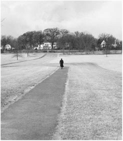
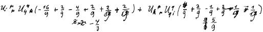

For his seventy-fifth birthday in March 1954, Einstein received from a medical center, unsolicited, a pet parrot that was delivered in a box to his doorstep. It had been a difficult journey, and the parrot seemed traumatized. At the time, Einstein was seeing a woman who worked in one of Princeton University’s libraries named Johanna Fantova, whom he had met back in Germany in the 1920s. “The pet parrot is depressed after his traumatic delivery and Einstein is trying to cheer him up with his jokes, which the bird doesn’t seem to appreciate,” she wrote in the wonderful journal she kept of their dates and conversations.1
The parrot rebounded psychologically and was soon eating out of Einstein’s hand, but it developed an infection. That necessitated a series of injections, and Einstein worried that the bird would not survive. But it was a tough bird, and after only two injections he bounced back.
Einstein likewise had repeatedly bounced back from bouts of anemia and stomach ailments. But he knew that the aneurysm on his abdominal aorta should soon prove fatal, and he began to display a peaceful sense of his own mortality. When he stood at the graveside and eulogized the physicist Rudolf Ladenberg, who had been his colleague in Berlin and then Princeton, the words seemed to be ones he felt personally. “Brief is this existence, as a fleeting visit in a strange house,” he said. “The path to be pursued is poorly lit by a flickering consciousness.”2
He seemed to sense that this final transition he was going through was at once natural and somewhat spiritual. “The strange thing about growing old is that the intimate identification with the here and now is slowly lost,” he wrote his friend the queen mother of Belgium. “One feels transposed into infinity, more or less alone.”3
After his colleagues updated, as a seventy-fifth birthday gift, the music system they had given him five years earlier, Einstein began repeatedly to play an RCA Victor recording of Beethoven’s Missa Solemnis. It was an unusual choice for two reasons. He tended to regard Beethoven, who was not his favorite composer, as “too personal, almost naked.”4 Also, his religious instincts did not usually include these sorts of trappings. “I am a deeply religious nonbeliever,” he noted to a friend who had sent him birthday greetings. “This is a somewhat new kind of religion.”5
It was time for reminiscing. When his old friends Conrad Habicht and Maurice Solovine wrote a postcard from Paris recalling their time together in Bern, more than a half century earlier, as members of their self-proclaimed Olympia Academy, Einstein replied with a paean addressed to that bygone institution: “Though somewhat decrepit, we still follow the solitary path of our life by your pure and inspiring light.” As he later lamented in another letter to Solovine, “The devil counts out the years conscientiously.”6
Despite his stomach problems, he still loved to walk. Sometimes it was with Gödel to and from the Institute, at other times it was in the woods near Princeton with his stepdaughter Margot. Their relationship had become even closer, but their walks were usually enjoyed in silence. She noticed that he was becoming mellower, both personally and politically. His judgments were mild, even sweet, rather than harsh.7
He had, in particular, made his peace with Hans Albert. Shortly after he celebrated his seventy-fifth birthday, his son turned 50. Einstein, thanks to a reminder from his son’s wife, wrote him a letter that was slightly formal, as if created for a special occasion. But it contained a nice tribute both to his son and to the value of a life in science: “It is a joy for me to have a son who has inherited the main traits of my personality: the ability to rise above mere existence by sacrificing one’s self through the years for an impersonal goal.”8 That fall, Hans Albert came east for a visit.
By then Einstein had finally discovered what was fundamental about America: it can be swept by waves of what may seem, to outsiders, to be dangerous political passions but are, instead, passing sentiments that are absorbed by its democracy and righted by its constitutional gyroscope. McCarthyism had died down, and Eisenhower had proved a calming influence. “God’s own country becomes stranger and stranger,” Einstein wrote Hans Albert that Christmas, “but somehow they manage to return to normality. Everything—even lunacy—is mass produced here. But everything goes out of fashion very quickly.”9
Almost every day he continued to amble to the Institute to wrestle with his equations and try to push them a little closer toward the horizon of a unified field theory. He would come in with his new ideas, often clutching equations on scraps of paper he had scribbled the night before, and go over them with his assistant of that final year, Bruria Kaufman, a physicist from Israel.
She would write the new equations on a blackboard so they could ponder them together, and point out problems. Einstein would then try to counter them.“He had certain criteria by which to judge whether this is relevant to physical reality or not,” she recounted. Even when they were defeated by the obstacles to a new approach, as they invariably were, Einstein remained optimistic. “Well, we’ve learned something,” he would say as the clock ticked down.10
In the evening, he would often explain his last-ditch efforts to his companion, Johanna Fantova, and she would record them in her journal. The entries for 1954 were littered with hopes raised and dashed. February 20: “Thinks he found a new angle to his theory, something very important that would simplify it. Hopes he won’t find any errors.” February 21: “Didn’t find any errors, but the new work isn’t as exciting as he had thought the day before.” August 25: “Einstein’s equations are looking good—maybe something will come of them—but it’s damned hard work.” September 21: “He’s making some progress with what was at first only a theory but is now looking good.” October 14: “Found an error in his work today, which is a setback.” October 24: “He calculated like crazy today but accomplished nothing.”11
That year Wolfgang Pauli, the quantum mechanics pioneer, came to visit. Again the old debate over whether God would play dice was reengaged, as it had been a quarter-century earlier at the Solvay Conferences. Einstein told Pauli that he still objected to the fundamental tenet in quantum mechanics that a system can be defined only by specifying the experimental method of observing it. There was a reality, he insisted, that was independent of how we observed it. “Einstein has the philosophical prejudice that a state, termed ‘real,’ can be defined objectively under any circumstances, that is, without specification of the experimental arrangement used to examine the system,” Pauli marveled in a letter to Max Born.12
He also clung to his belief that physics should be based, as he told his old friend Besso, “on the field concept, i.e., on continuous structures.” Seventy years earlier, his awe at contemplating a compass caused him to marvel at the concept of fields, and they had guided his theories ever since. But what would happen, he worried to Besso, if field theory turned out to be unable to account for particles and quantum mechanics? “In that case nothing remains of my entire castle in the air, gravitation theory included.”13
So even as Einstein apologized for his stubbornness, he proudly refused to abandon it. “I must seem like an ostrich who forever buries its head in the relativistic sand in order not to face the evil quanta,” he wrote Louis de Broglie, another of his colleagues in the long struggle. He had found his gravitational theories by trusting an underlying principle, and that made him a “fanatic believer” that comparable methods would eventually lead to a unified field theory. “This should explain the ostrich policy,” he wryly told de Broglie.14
He expressed this more formally in the concluding paragraph of his final updated appendix to his popular book, Relativity: The Special and General Theory. “The conviction prevails that the experimentally assured duality (corpuscular and wave structure) can be realized only by such a weakening of the concept of reality,” he wrote. “I think that such a far-reaching theoretical renunciation is not for the present justified by our actual knowledge, and that one should not desist from pursuing to the end the path of the relativistic field theory.”15
Bertrand Russell encouraged him to continue, in addition, the search for a structure that would ensure peace in the atomic age. They had both opposed the First World War, Russell recalled, and supported the Second. Now it was imperative to prevent a third. “I think that eminent men of science ought to do something dramatic to bring home to the governments the disasters that may occur,” Russell wrote. Einstein replied by proposing a “public declaration” that they and perhaps a few other eminent scientists and thinkers could sign.16
Einstein set to work enlisting his old friend and sparring partner, Niels Bohr. “Don’t frown like that!” Einstein joked, as if he were face-to-face with Bohr rather than writing to him in Copenhagen. “This has nothing to do with our old controversy on physics, but rather concerns a matter on which we are in complete agreement.” Einstein admitted that his own name might carry some influence abroad, but not in America,“where I am known as a black sheep (and not merely in scientific matters).”17
Alas, Bohr declined, but nine other scientists, including Max Born, agreed to join the effort. Russell concluded the proposed document with a simple plea: “In view of the fact that in any future world war nuclear weapons will certainly be employed, and that such weapons threaten the continued existence of mankind, we urge the governments of the world to realize, and to acknowledge publicly, that their purpose cannot be furthered by a world war, and we urge them, consequently, to find peaceful means for the settlement of all matters of dispute between them.”18
Einstein made it to his seventy-sixth birthday, but he was not well enough to come outside to wave to the reporters and photographers gathered in front of 112 Mercer Street. The mailman delivered presents, Oppenheimer came by with papers, the Bucky family brought some puzzles, and Johanna Fantova was there to record the events.
Among the presents was a tie sent by the fifth grade of the Farmingdale Elementary School in New York, which presumably had seen pictures of him and thought he could use one. “Neckties exist for me only as remote memories,” he admitted politely in his letter of thanks.19
A few days later, he learned of the death of Michele Besso, the personal confessor and scientific sounding board he had met six decades earlier upon arriving as a student in Zurich. As if he knew that he had only a few more weeks, Einstein ruminated on the nature of death and time in the condolence letter he wrote to Besso’s family. “He has departed from this strange world a little ahead of me. That means nothing. For us believing physicists, the distinction between past, present and future is only a stubborn illusion.”
Einstein had introduced Besso to his wife, Anna Winteler, and he marveled as his friend made the marriage survive despite some difficult patches. Besso’s most admirable personal trait, Einstein said, was to live in harmony with a woman, “an undertaking in which I twice failed rather miserably.”20
One Sunday in April, the Harvard historian of science I. Bernard Cohen went to see Einstein. His face, deeply lined, struck Cohen as tragic, yet his sparkling eyes made him seem ageless. He spoke softly yet laughed loudly. “Every time he made a point that he liked,” Cohen recalled, “he would burst into booming laughter.”
Einstein was particularly amused by a scientific gadget, designed to show the equivalence principle, that he had recently been given. It was a version of the old-fashioned toy in which a ball that hangs by a string from the end of a stick has to be swung up so that it lands in a cup atop the stick. This one was more complex; the string tied to the ball went through the bottom of the cup and was attached to a loose spring inside the handle of the contraption. Random shaking would get the ball in the cup every now and then. The challenge: Was there a method that would get the ball in the cup every time?
As Cohen was leaving, a big grin came over Einstein’s face as he said he would explain the answer to the gadget. “Now the equivalence principle!” he announced. He poked the stick upward until it almost touched the ceiling. Then he let it drop straight down. The ball, while in free fall, behaved as if it was weightless. The spring inside the contraption instantly pulled it into the cup.21
Einstein was now entering the last week of his life, and it is fitting that he focused on the matters most important to him. On April 11, he signed the Einstein-Russell manifesto. As Russell later declared, “He remained sane in a mad world.”22 Out of that document grew the Pug-wash Conferences, in which scientists and thinkers gathered annually to discuss how to control nuclear weapons.
Later that same afternoon, Israeli Ambassador Abba Eban arrived at Mercer Street to discuss a radio address Einstein was scheduled to give to commemorate the seventh anniversary of the Jewish state. He would be heard, Eban told him, by as many as 60 million listeners. Einstein was amused. “So, I shall now have a chance to become world famous,” he smiled.
After rattling around in the kitchen to make Eban a cup of coffee, Einstein told him that he saw the birth of Israel as one of the few political acts in his lifetime that had a moral quality. But he was concerned that the Jews were having trouble learning to live with the Arabs. “The attitude we adopt toward the Arab minority will provide the real test of our moral standards as a people,” he had told a friend a few weeks earlier. He wanted to broaden his speech, which he was scribbling in German in a very tight and neat handwriting, to urge the creation of a world government to preserve peace.23
Einstein went in to work at the Institute the next day, but he had a pain in his groin and it showed on his face. Is everything all right? his assistant asked. Everything is all right, he replied, but I am not.
He stayed at home the following day, partly because the Israeli consul was coming and partly because he was still not feeling well. After the visitors left, he lay down for a nap. But Dukas heard him rush to the bathroom in the middle of the afternoon, where he collapsed. The doctors gave him morphine, which helped him sleep, and Dukas set up her bed right next to his so that she could put ice on his dehydrated lips throughout the night. His aneurysm had started to break.24
A group of doctors convened at his home the next day, and after some consultation they recommended a surgeon who might be able, though it was thought unlikely, to repair the aorta. Einstein refused. “It is tasteless to prolong life artificially,” he told Dukas. “I have done my share, it is time to go. I will do it elegantly.”
He did ask, however, whether he would suffer “a horrible death.” The answer, the doctors said, was unclear. The pain of an internal hemorrhage could be excruciating. But it may take only a minute, or maybe an hour. To Dukas, who became overwrought, he smiled and said, “You’re really hysterical—I have to pass on sometime, and it doesn’t really matter when.”25
Dukas found him the next morning in agony, unable to lift his head. She rushed to the telephone, and the doctor ordered him to the hospital. At first he refused, but he was told he was putting too much of a burden on Dukas, so he relented. The volunteer medic in the ambulance was a political economist at Princeton, and Einstein was able to carry on a lively conversation with him. Margot called Hans Albert, who caught a plane from San Francisco and was soon by his father’s bedside. The economist Otto Nathan, a fellow German refugee who had become his close friend, arrived from New York.
But Einstein was not quite ready to die. On Sunday, April 17, he woke up feeling better. He asked Dukas to get him his glasses, papers, and pencils, and he proceeded to jot down a few calculations. He talked to Hans Albert about some scientific ideas, then to Nathan about the dangers of allowing Germany to rearm. Pointing to his equations, he lamented, half jokingly, to his son, “If only I had more mathematics.”26 For a half century he had been bemoaning both German nationalism and the limits of his mathematical toolbox, so it was fitting that these should be among his final utterances.
He worked as long as he could, and when the pain got too great he went to sleep. Shortly after one a.m. on Monday, April 18, 1955, the nurse heard him blurt out a few words in German that she could not understand. The aneurysm, like a big blister, had burst, and Einstein died at age 76.
At his bedside lay the draft of his undelivered speech for Israel Independence Day. “I speak to you today not as an American citizen and not as a Jew, but as a human being,” it began.27
Also by his bed were twelve pages of tightly written equations, littered with cross-outs and corrections.28 To the very end, he struggled to find his elusive unified field theory. And the final thing he wrote, before he went to sleep for the last time, was one more line of symbols and numbers that he hoped might get him, and the rest of us, just a little step closer to the spirit manifest in the laws of the universe.
